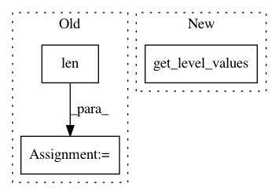

5e82953e37f859b023eb2050abdfedc8c7447fb0,recordlinkage/indexing.py,Pairs,iterindex,#Pairs#Any#Any#Any#,227
Before Change
else: // Deduplication
pairs_block_class = Pairs(self.A[bl[0]:bl[2]])
pairs_block_class._index_factors = (self.A.index.values, np.arange(len(self.A.index)))
pairs_block = pairs_block_class.index(index_func, *args, **kwargs)
After Change
if self.deduplication: // Deduplication
pairs_block_class = Pairs(self.A[bl[0]:bl[2]], pd.DataFrame(self.A, index=pd.Index(self.A.index, name=self.A.index.name + "_")))
pairs_block = pairs_block_class.index(index_func, *args, **kwargs)
pairs_block = pairs_block[pairs_block.get_level_values(0) < pairs_block.get_level_values(1)]
else:
pairs_block_class = Pairs(self.A[bl[0]:bl[2]], self.B[bl[1]:bl[3]])
In pattern: SUPERPATTERN
Frequency: 3
Non-data size: 3
Instances
Project Name: J535D165/recordlinkage
Commit Name: 5e82953e37f859b023eb2050abdfedc8c7447fb0
Time: 2016-02-06
Author: jonathandebruinhome@gmail.com
File Name: recordlinkage/indexing.py
Class Name: Pairs
Method Name: iterindex
Project Name: CamDavidsonPilon/lifelines
Commit Name: 279f47ca9fe95b3248f31db3580e1748e05ba041
Time: 2020-07-11
Author: cam.davidson.pilon@gmail.com
File Name: lifelines/fitters/__init__.py
Class Name: ParametericAFTRegressionFitter
Method Name: _create_initial_point
Project Name: nilmtk/nilmtk
Commit Name: 5eeca7d385178092790e08c1d5ad6cbcff35d3dc
Time: 2014-12-11
Author: jack-list@xlk.org.uk
File Name: nilmtk/metergroup.py
Class Name: MeterGroup
Method Name: load